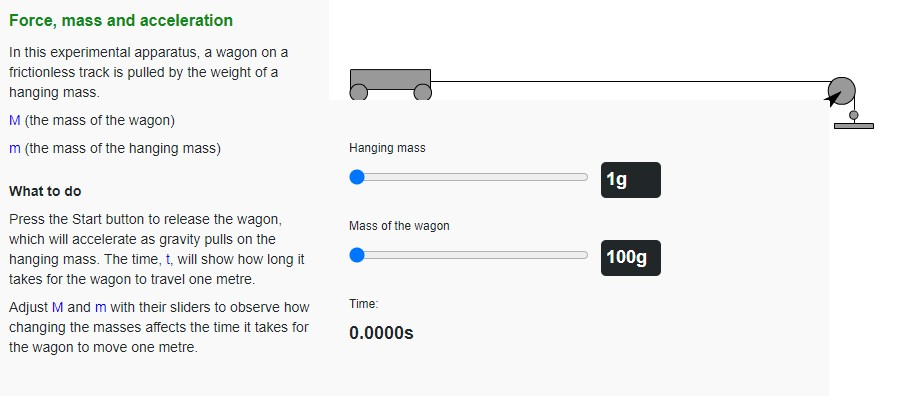
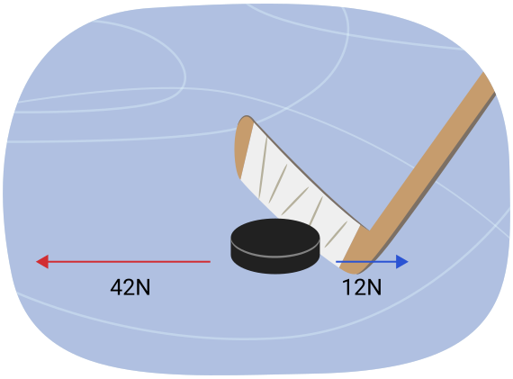
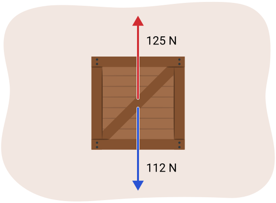
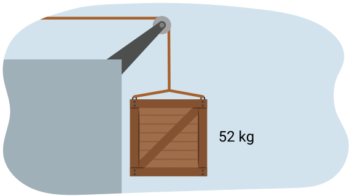
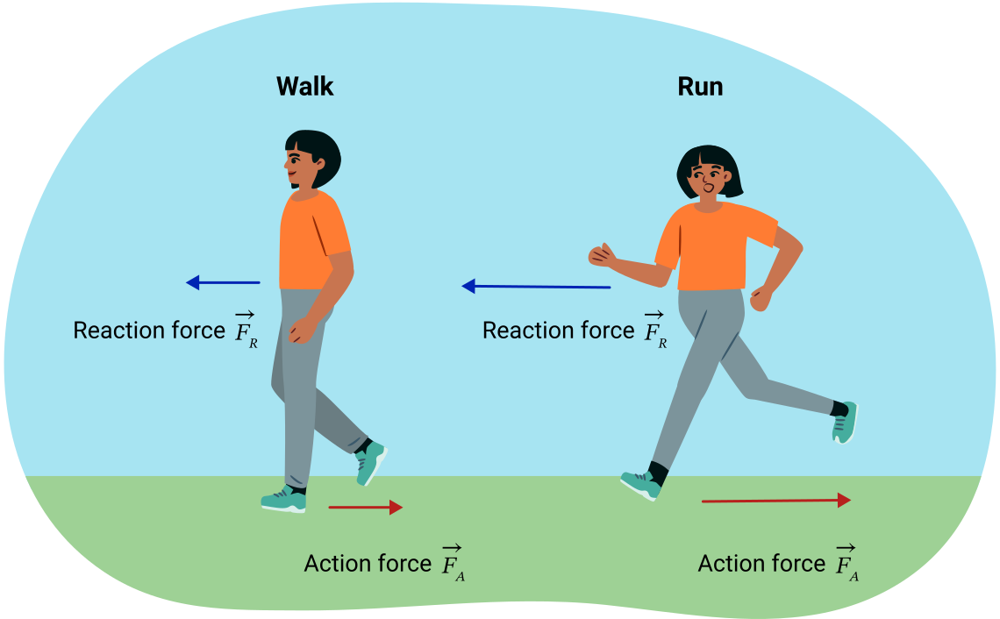
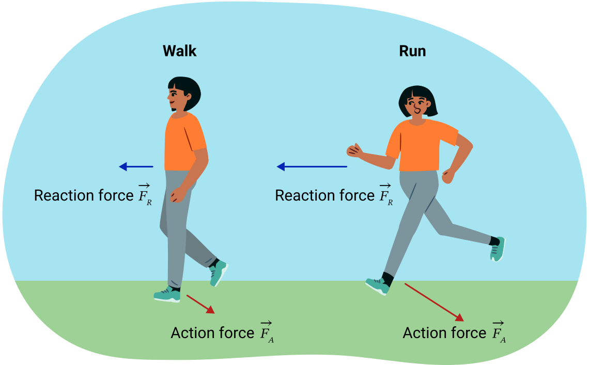
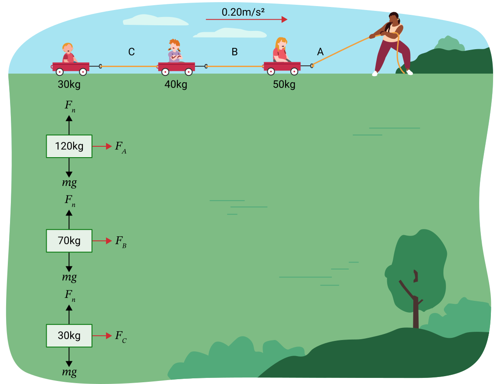
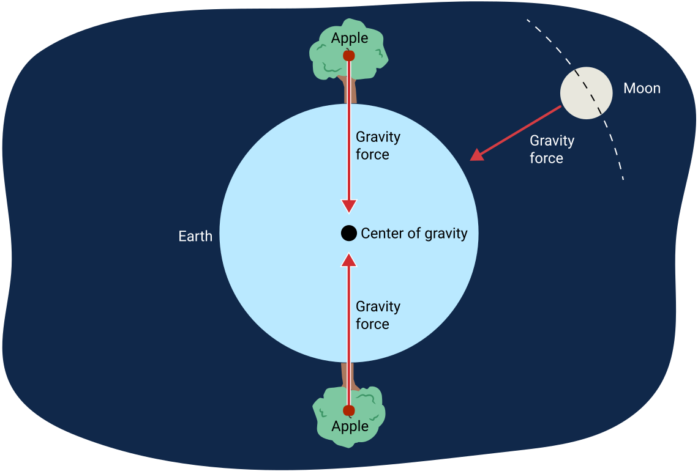
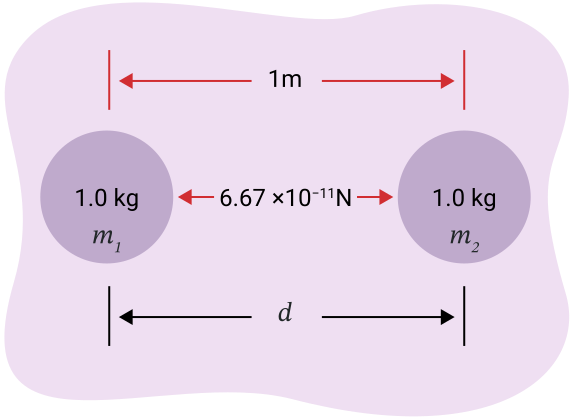
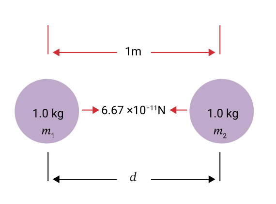

노트
어휘: 힘과 뉴턴의 법칙 연구를 설명하는 데 사용되는 다음 어휘를 기록하세요. 학습 활동을 완료하면서 어휘와 관련된 정의와 핵심 용어를 작성하세요.
- 작용력(action force)
- 반작용력(reaction force)
- 뉴턴의 제1운동법칙
- 뉴턴의 제2운동법칙
- 뉴턴의 제3운동법칙
탐구해 보기!
캐나다 우주비행사 Chris Hadfield가 국제우주정거장(International Space Station)에서 우주에 있는 다음 영상을 탐구해 보세요.
영상을 재생하면서 그가 우주에서 떠다니는 것처럼 보이는 것에 주목하세요.
Dr. Mae Jemison은 의사이자 우주비행사로, 1992년 NASA 임무에서 우주왕복선 Endeavour를 타고 일주일 이상 지구를 궤도 비행했습니다.
그 정보를 탐구한 후 우주에서 떠다니는 사람들에 대해 몇 가지 궁금한 점이 있을 수 있습니다.
노트
이제 노트에 다음 KWL(알고 있는 것, 알고 싶은 것, 배운 것) 표를 작성할 것입니다.
과제는 무중력(weightlessness)이라 불리는 현상에 대해 이미 알고 있는 것을 떠올리는 것입니다. 두 번째 열은 이 현상에 대해 알고 싶은 질문을 기록하는 곳입니다. 마지막 열은 이 학습 활동을 마칠 때까지 비워 두세요. 이 학습 활동이 끝나면 우주에서의 운동에 대해 배운 내용을 이 열에 채우세요.
우주에서 우주비행사들이 떠다니는 것처럼 보이는 이유에 대해 생각해 보세요. 이 현상을 일으키는 원인이 무엇이라고 생각합니까?
| 무엇을 알고 있습니까? | 무엇을 알고 싶습니까? | 무엇을 배웠습니까? |
|---|---|---|

힘, 질량, 가속도
이 단원에서 여러분은 스포츠를 하는 데 필요한 운동과 힘에 대해 논의해 왔습니다. 사진에 묘사된 것처럼 걷기와 달리기 같은 활동에는 많은 힘이 관련됩니다. 발뒤꿈치가 땅에 닿는 충격과 움직이는 사람이 앞으로 나아갈 때 뒷다리가 뻗어지는 것은 발, 무릎, 엉덩이 관절에 많은 힘을 만듭니다. 이 힘들은 균형을 유지하고 앞으로 나아가게 하지만, 부상을 일으킬 수도 있습니다. 이 탐구에서 힘, 질량, 가속도(acceleration) 사이의 관계를 탐구할 것입니다.
실험 활동
힘, 질량, 가속도 사이의 관계
다음 상호작용 실험 활동을 사용하여 힘, 질량, 가속도가 어떻게 관련되어 있는지 조사하세요. 먼저 스스로 실험해 본 다음, 힘, 질량 및 가속도 실험 지침을 검토하고 따르면서 전체에 걸친 질문에 답하세요. 이 단원 끝의 과제에서 이 실험 조사를 다시 참조할 것입니다.
여기를 선택하여 힘, 질량 및 가속도 실험 지침 (새 창에서 열림)을 여세요.
접근 가능한 버전을 보려면 여기를 누르세요: 실험 활동: 힘, 질량 및 가속도 접근 가능 버전. (새 창에서 열림)

시작 (새 창에서 열림)뉴턴의 제2운동법칙
이전 탐구에서 질량, 힘, 가속도 사이의 관계를 발견할 기회를 가졌습니다. 이 관계는 Isaac Newton에 의해 처음 설명되었으며 뉴턴의 제2법칙으로 알려져 있습니다. 이것은 수학적으로 다음과 같이 표현할 수 있습니다:
공식
뉴턴의 제2운동법칙
불균형한 힘이 물체에 작용하면, 물체는 힘의 방향으로 가속합니다. 뉴턴의 제2법칙에 사용된 방정식에서 보듯이, 가속도는 불균형한 힘에 비례하지만 질량에 반비례합니다. 다시 말해, 물체에 작용하는 알짜힘은 물체의 질량에 물체의 가속도를 곱한 것과 같습니다. 힘과 가속도는 모두 벡터량이며 이 경우 같은 방향을 가집니다. 이 방정식에서 단위는 항상 힘에 뉴턴, 질량에 킬로그램, 가속도에 m/s2이어야 합니다.
예제 1: 뉴턴의 제2법칙
식료품 카트에서 1.4 m/s2 [앞으로]로 가속하는 4.0 kg 밀가루 봉지에 작용하는 힘을 계산하세요. 예시 답안 보기를 눌러 답을 비교하세요.
주어진 값:
미지수:
방정식:
풀이:
결론:
식료품 카트에 작용하는 힘은 5.6 N [앞으로]입니다.
예제 2: 뉴턴의 제2법칙
공이 6.4 N [동쪽]의 불균형한 힘을 받아 21 m/s2 [동쪽]으로 가속합니다. 공의 질량을 구하세요.
주어진 값:
미지수:
방정식:
풀이:
결론:
공의 질량은 0.30 kg입니다.
예제 3: 뉴턴의 제2법칙
42 N [앞으로]의 힘으로 밀리지만 12 N의 뒤쪽 힘도 받는 하키 퍽의 가속도를 구하세요. 하키 퍽의 질량은 165 g입니다. 참고: 물체에 두 개의 반대 방향 힘이 작용하므로, 먼저 알짜힘을 계산해야 합니다. 퍽에 작용하는 힘은 다음 이미지에 표시되어 있습니다.

주어진 값:
미지수:
방정식:
풀이:
결론:
하키 퍽의 가속도는 180 m/s2입니다.
노트
이제 여러분의 차례입니다! 뉴턴의 제2법칙 방정식을 사용하여 노트에 다음 질문을 풀어보세요. 자신의 풀이를 예시 답안과 비교하여 이해도를 확인하세요. 이 간단한 계산에서는 GUESS 풀이 방식을 사용하지 않습니다. GUESS 구조가 필요한 시기를 결정하려면 과제 지침을 주의 깊게 읽으세요.
1. 질량이 45.4 g인 골프공이 9.2 m/s2 [아래]로 가속할 때 불균형한 힘을 계산하세요.
0.42 N [아래]. 먼저 질량을 그램에서 킬로그램으로 변환하는 것을 잊지 마세요!
2. 질량이 1500 kg인 자동차가 2.8 m/s2 [앞으로]로 가속할 때 불균형한 힘을 계산하세요.
4200 N [앞으로].
3. 망치가 질량 10.0 g인 못에 25 N [아래]의 알짜힘을 가할 때 가속도를 계산하세요.
[아래]. 질량을 kg으로 변환하는 것을 잊지 마세요!
4. 다음 그림과 같이 2.5 kg 상자가 케이블에 매달려 있고, 위쪽으로 125 N의 장력(힘)이 작용하지만 아래쪽으로 112 N의 힘이 당기고 있을 때 가속도를 계산하세요.

5.2 m/s² [위]. 물체에 작용하는 알짜힘을 사용해야 합니다: 125 N – 112 N = 13 N [위].
5. 질량이 1460 kg인 자동차가 520 N의 전진 힘과 각각 142 N과 25 N인 두 개의 별도 후진 힘(마찰력과 공기 저항)을 받을 때 가속도를 계산하세요.
0.24 m/s² [앞으로]. 물체에 작용하는 알짜힘을 사용해야 합니다: 520 N – 142N – 25N = 353 N [앞으로].
예제: 접촉력과 비접촉력의 결합
옆 그림에 표시된 것처럼, 오렌지를 담은 상자가 마찰이 없는 도르래를 넘는 밧줄에 연결되어 있습니다. 밧줄의 장력은 450 N이고 오렌지 상자의 총 질량은 52 kg입니다. 오렌지 상자에 작용하는 알짜힘을 구하세요.
다음 탭을 눌러 각 단계를 탐구하세요.

뉴턴의 제3법칙
맨발로 실수로 작은 돌을 밟아 아픔을 느낀 적이 있습니까? 돌이 발 안으로 밀고 올라오는 것처럼 느꼈습니까?
스케이트를 신고 아이스링크 측면의 보드를 손으로 밀면 어떻게 됩니까? 가만히 있습니까? 적용된 힘의 방향으로 보드 쪽으로 움직입니까, 아니면 힘이 적용된 방향과 반대 방향으로 보드에서 멀어져 아이스링크 중앙 쪽으로 움직입니까?
이것들은 뉴턴의 제3법칙의 예입니다.
뉴턴의 제3운동법칙
뉴턴의 제3운동법칙
모든 작용력에 대해 크기가 같고 방향이 반대인 반작용력이 존재합니다.
반작용력은 작용력과 같은 크기를 가지지만 작용력과 반대 방향으로 작용합니다.
방정식에서 음의 부호는 두 힘의 방향이 반대임을 보장합니다.
작용력과 반작용력은 서로 다른 물체에 작용한다는 것을 이해하는 것이 중요합니다. 같은 물체에 작용한다면 운동을 일으키지 못할 것입니다.
노트
노트에 다음 각 상황에 대한 작용력과 반작용력을 기술하세요. 자신의 풀이를 답과 비교하여 이해도를 확인하세요.
반작용력: 골키퍼의 손이 공을 앞으로 밉니다.
반작용력: 공이 라켓을 뒤로 밉니다.
반작용력: 물이 다이버를 위로 밉니다.
뉴턴의 제3법칙과 운동
여러분은 이동하기 위해 끊임없이 뉴턴의 제3법칙을 사용하고 있습니다. 걷는 간단한 행동이 이 법칙의 좋은 예입니다. 걸을 때 땅을 아래쪽과 뒤쪽으로 밀면, 이것이 다음 그림에 나타난 작용력입니다. 이를 뒤집으면 반작용력이 됩니다 - 지구가 여러분을 위쪽과 앞쪽으로 밉니다. 이 힘의 결과로 여러분은 앞으로 움직입니다. 기술적으로 지구는 뒤로 움직여야 하지만, 여러분이 가하는 힘은 행성을 움직이기에 너무 작습니다.
달릴 때는 어떻게 됩니까? 이 경우 더 큰 힘으로 땅을 아래쪽과 뒤쪽으로 밀고 지구는 더 큰 힘으로 여러분을 위쪽과 앞쪽으로 밉니다. 힘이 더 크기 때문에 다음 그림에 나타난 것처럼 더 빨리 움직일 것입니다.

생각해 보기
이 상황을 생각해 보세요: 여러분이 차를 운전하고 있는데 벌레가 앞유리에 부딪힙니다. 벌레에 작용하는 알짜힘을 자동차에 작용하는 알짜힘과 비교하세요.
힘은 같습니다. 벌레가 앞유리에 부딪히는 것이 작용력이고 앞유리가 벌레에 부딪히는 것이 반작용력입니다. 뉴턴의 제3법칙에 따르면 작용력과 반작용력은 크기가 같고 방향이 반대입니다.
힘의 효과가 왜 그렇게 다릅니까?
벌레는 으깨지지만 자동차에는 사실상 아무런 영향이 없습니다. 이는 질량이 너무 다르기 때문입니다. 벌레가 앞유리에 가하는 힘이 20 N이라면, 20 N의 힘은 움직이는 자동차에 어떤 영향도 미치기에 너무 작습니다. 그러나 앞유리가 벌레에 가하는 20 N의 힘은 벌레를 으깨기에 충분히 큽니다.
예제: 작용-반작용 쌍
작용-반작용 시스템의 좋은 예는 스케이트보드(질량 5.0 kg) 위의 어린이(질량 50 kg)입니다. 처음에 그들은 정지해 있습니다. 그런 다음 어린이가 보드에 40 N [왼쪽]의 작용력을 가합니다. 반작용력은 어린이에게 40 N [오른쪽]의 힘을 가합니다. 어린이는 오른쪽으로 가속하고 보드는 왼쪽으로 가속합니다. 이를 일으키는 힘을 계산할 수 있습니다. 가속이 수평면에서 일어나므로, 중력(Fg)과 수직 항력(FN)은 무시할 수 있습니다. 보드에 작용하는 유일한 수평 힘은 [왼쪽]입니다. 다음 그림은 이 작용-반작용 시스템을 나타냅니다.

뉴턴의 제3법칙을 사용하여 어린이와 스케이트보드의 가속도를 구하는 방법을 다음 단계를 탐구하세요.
스케이트보드와 어린이에 작용하는 힘은 모두 40 N이지만, 효과가 다르다는 것에 주목하세요. 스케이트보드는 8.0 m/s2로 가속하고 어린이는 0.8 m/s2로만 가속합니다. 질량의 차이가 다른 가속도를 만듭니다.
예제 2: 뉴턴의 제3법칙
한 어른이 세 개의 밧줄 A, B, C로 연결된 세 대의 수레에 탄 세 명의 어린이를 끌고 있습니다. 각 어린이와 수레 쌍의 결합 질량은 각각 50.0 kg, 40.0 kg, 30.0 kg입니다. 수레들은 0.20 m/s2 [오른쪽]으로 가속합니다. 이 시스템에 마찰이 없다고 가정하고 각 밧줄이 가하는 힘(장력이라고도 함)을 구하세요.
밧줄 A는 총 120 kg의 질량을 당겨 0.20 m/s2 [오른쪽]으로 가속시켜야 합니다. 밧줄 B는 뒤에 있는 것만 당길 수 있습니다. 밀 수 없으므로, 앞에 있는 50 kg 질량에 "관심이 없고", 뒤에 있는 총 70 kg 질량만 해당됩니다. 밧줄 C는 뒤에 있는 것만 당길 수 있습니다. 밀 수 없으므로, 앞에 있는 50 kg과 40 kg 질량에 "관심이 없고", 뒤에 있는 30 kg 총 질량만 해당됩니다. 마찰은 무시할 수 있습니다. 다음은 이 상황에 대한 시각적 표현과 FBD입니다.

잠깐 쉬어가기!
훌륭합니다! 힘, 질량, 가속도에 대한 학습 부분을 방금 완료했습니다. 만유인력의 법칙으로 넘어가기 전에 지금 쉬어가기 좋은 시간입니다.
만유인력의 법칙
Sir Isaac Newton과 사과의 전설적인 이야기를 알고 있을 것입니다. 천재적인 행위는 다른 사람들이 항상 인식해 온 것을 완전히 다른 방식으로 관찰하는 것이라고 할 수 있습니다.
이것이 Newton이 사과로 한 일입니다. 다른 모든 사람들은 사과가 "아래로" 떨어진다고 생각했습니다. 그는 다르게 보았습니다. 그는 사과가 지구 전체에서 떨어지는 것을 상상했고, 사과가 아래로 떨어지는 것이 아니라 안쪽으로 떨어진다는 것을 깨달았습니다. 다음 그림에 나타난 것처럼 지구가 사과를 중심으로 안쪽으로 당기는 것입니다. Newton은 이 안쪽으로 당기는 힘을 "중력(gravity)"이라고 명명했습니다.

Newton은 이와 같은 힘(중력)이 400,000 km 떨어진 우주까지 도달하여 달을 안쪽으로 당긴다는 것을 깨달았습니다. 중력은 달을 지구 주위의 궤도에 끌어당기는 보이지 않는 끈과 같습니다. 중력이 없다면, 달의 관성은 직선으로 계속 이동하게 하여 궤도에 머물지 않을 것입니다.
달도 같은 힘으로 지구를 당기며 지구 해양에 밀물과 썰물을 만듭니다. 달의 중력이 어떻게 조석을 만드는지 더 알아보려면 온라인 검색을 해 보세요.
Newton은 모든 물체가 중력이라는 힘으로 다른 모든 물체를 끌어당긴다는 생각에 도달했습니다. 모든 곳의 모든 물체가 이 힘을 가지므로, 그의 생각은 뉴턴의 만유인력의 법칙(law of universal gravitation)이라고 합니다.
이 법칙에 따르면 각 물체의 질량에 정비례하는 인력이 두 물체 사이에 존재합니다. 다시 말해, 이 인력은 더 큰 물체에 대해 더 강해집니다. 인력은 두 물체를 분리하는 거리의 제곱에 반비례합니다. 두 물체 사이의 거리가 커질수록 힘이 감소합니다.
더 알아보기
Newton의 생각에 대한 실험적 증명은 Henry Cavendish가 제공했습니다. 인터넷을 사용하여 "Cavendish 실험"을 검색해 보세요.
본질적으로 Cavendish는 두 개의 무거운 질량을 사용하여 Newton이 예측한 대로 서로 끌어당기는 것을 관찰할 수 있었습니다. 그는 1.0 m 떨어진 두 개의 1.0 kg 질량이 6.67 × 10-11 N이라는 매우 작은 힘으로 서로를 당긴다는 것을 결정할 수 있었습니다. 이 숫자는 만유인력 상수(Universal Gravitational Constant, G)로 알려지게 되었습니다. 다음 그림은 Cavendish의 실험을 나타냅니다.

뉴턴의 만유인력의 법칙에 따르면 두 물체 사이에 인력이 존재합니다. 이 힘은 물체의 질량(m1과 m2)이 증가하면 증가하고, 물체 사이의 거리(d)가 증가하면 감소합니다.
공식
여기서 G는 만유인력 상수입니다:
예제 1
25 m 떨어진 2.0 kg 물체와 5.0 kg 물체 사이의 중력을 구하세요.
이것은 매우 작은 힘입니다. 중력은 물체 중 하나 이상이 매우 큰 질량을 가지지 않는 한 눈에 띄기에 너무 작습니다.
예제 2
지구의 반지름은 6.38 × 106 m이고 질량은 5.98 × 1024 kg입니다. 지구 표면에서 50 kg인 사람의 무게를 계산하세요. 옆의 그림은 지구와 그 위에 있는 사람을 시각적으로 나타낸 것입니다. 힌트: 무게는 중력의 다른 말입니다.

이 힘은 지구의 질량이 훨씬 크기 때문에 훨씬 크고 눈에 띕니다.
참고: 이전에 사용한 방정식 Fg = mg를 사용하여 50 kg인 사람의 무게를 계산해도 같은 값이 나옵니다.
Fg = mg = (50 kg)(9.8 N/kg) = 490 N
중력장 세기(g)를 알고 있다면, Fg = mg 방정식을 사용하여 물체의 무게를 계산할 수 있습니다.
노트
노트에 다음 질문을 직접 풀어보고 자신의 풀이를 답과 비교하여 이해도를 확인하세요.
1. 목성은 태양계에서 가장 큰 행성으로, 질량이 1.90 ×1027kg이고 반지름이 7.18 × 107 m입니다.
a) 목성 표면에서 65 kg인 사람의 무게는 얼마입니까?
1600 N.
b) 어느 행성에서 사람의 무게가 더 큽니까? 왜 그렇습니까?
무게는 중력과 같습니다. 목성의 질량이 더 크므로 중력이 더 크고, 이것은 목성 표면에서 사람의 무게가 더 나간다는 것을 의미합니다.
예제 3
이제 우주에서 두 물체 사이의 중력에 대해 배웠습니다. 사실, 궤도에 있는 Chris Hadfield와 같은 우주비행사와 지구 사이의 중력도 계산할 수 있습니다.
다음 알려진 변수들을 사용하여, 지구 표면 위 360 km에서 궤도를 도는 우주왕복선에 탄 75 kg 우주비행사에게 작용하는 중력을 계산하세요.
주어진 값:
(지구의 질량)
지구의 반지름
궤도를 도는 우주왕복선은 지구 표면 위 360,000 m의 고도에 있습니다. 따라서
미지수:
방정식:
풀이:
결론:
우주비행사에게 작용하는 중력은 660 N입니다.
지구 표면에서의 중력장 세기를 사용한 중력(무게) 방정식을 사용하면:
우주비행사에게는 여전히 지구 표면의 89%에 해당하는 힘이 있습니다. 따라서 우주비행사에게 중력이 작용하지 않는다는 것은 오해입니다. 우주에서 떠다니는 것처럼 보이는 이유는 다른 것이 있을 것입니다.
읽기
다음 기사를 읽어 보세요: 우주에서 우주비행사들은 왜 떠다닐까?새 창에서 열림
이 기사는 여러분의 중력 계산을 확인해 줄 뿐만 아니라, 우주에서 우주비행사들이 무중력 상태처럼 보이는 이유도 설명합니다.
노트
이제 학습 활동 초반에 작성한 KWL 표를 다시 살펴볼 것입니다. 마지막 열에 우주에서 우주비행사들이 떠다니는 이유에 대해 "배운 것"을 채우세요.
| 무엇을 알고 있습니까? | 무엇을 알고 싶습니까? | 무엇을 배웠습니까? |
|---|---|---|

더 알아보기
국제우주정거장(ISS) 투어
미세 중력에서 생활하는 것은 인간에게 온갖 종류의 어려움을 줍니다. 국제우주정거장(ISS)은 우주비행사들이 장기간 생활할 수 있도록 설계되었습니다.
유럽우주국이 만든 가상 투어를 탐험하여 국제우주정거장 가상 현장 학습을 할 수 있습니다. 원하는 검색 엔진을 사용하여 "International space station panoramic tour"를 검색하세요.
탐험하면서 다음을 생각해 보세요:
- ISS에 대해 어떤 점이 놀라웠습니까?
- 중력 없이 생활하는 우주비행사를 지원하는 어떤 도구나 적응 방법을 볼 수 있습니까?
- 우주비행사가 이 공간에서 생활하면서 어떤 어려움에 직면할 수 있습니까?
- 기회가 된다면 ISS에서 생활한 우주비행사에게 어떤 질문을 하겠습니까?
복습
어휘 확인: 이 학습 활동과 관련된 단어의 정의를 검토하고 확인하세요. 힘과 뉴턴의 운동 법칙에 대해 배운 내용의 맥락에서 그 단어들을 사용하는 문단을 추가하세요.
자기 점검 퀴즈
이해도를 확인하세요!
다음 자기 점검 퀴즈를 완료하여 학습 진행 상황과 집중해야 할 영역을 파악하세요.
이 퀴즈는 피드백 목적으로만 사용되며, 성적에 포함되지 않습니다. 이 퀴즈는 무제한으로 시도할 수 있습니다. 충분한 시간을 가지고, 최선을 다하며, 제공된 피드백을 되돌아보세요.
퀴즈를 눌러 이 도구에 접속하세요.